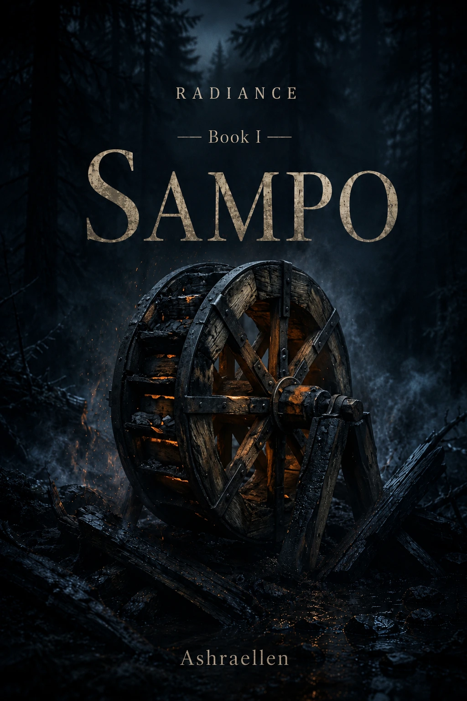

Kirja I — Sampo
Runsaus, omistaminen, osallisuus ja rauha. Kysymys ei ole siitä, miten Sampo saadaan, vaan miksi ihminen haluaa omistaa sen, minkä varassa hän jo elää.
Ashraellen
Kirjallis-filosofinen sykli / taiteellinen tutkimus fiktion kautta
Pohjoisia kertomuksia maailman todellisesta historiasta. Pitkä sykli, jossa taidemuoto ei selitä tutkimusta vaan tekee tutkimuksen mahdolliseksi.
Emme kerro Kalevalaa uudelleen. Yritämme kuulla maailman, josta sellaiset kertomukset saattoivat syntyä.
ei mytologian koristelua
Eepokset, sadut ja vanhat kertomukset voidaan lukea kuvallisina käyttöliittyminä kokemukseen, joka syntyi ennen nykyisiä käsitteitämme. Jokainen kansa sai oman maansa, ilmastonsa, työnsä, kielensä ja muistinsa mukaisen tavan puhua siitä, mitä ihminen tarvitsee pysyäkseen suhteessa maailmaan.
HOHDE tutkii tätä mahdollisuutta kirjallisuuden kautta. Suomen ja Karjalan aineisto sekä Kalevala muodostavat syklin pohjoisen selkärangan, mutta tarkoitus ei ole rekonstruoida oppia eikä tehdä fantasiaa.
Kysymys on käytännöllisempi: voiko taiteellinen muoto palauttaa vanhalle kuvalle sen työkyvyn — niin että se ei ole museoitu symboli vaan jokin, jonka ihminen tunnistaa omassa elämässään?
nykyinen rakenne

Runsaus, omistaminen, osallisuus ja rauha. Kysymys ei ole siitä, miten Sampo saadaan, vaan miksi ihminen haluaa omistaa sen, minkä varassa hän jo elää.

Sana, kuuleminen, kieli ja virittyminen. Voiko kieli lakata olemasta mielipide tai itseilmaisu ja muuttua tavaksi asettua oikeaan suhteeseen?
Käsityö, muoto, teknologia ja vastuu: mitä ihminen tekee voimalla silloin, kun voima vaatii mittaa?
vanha kuva työskentelevänä muotona
HOHDE ei väitä todistavansa “muinaista totuutta”. Se testaa, voiko kirjallinen muoto saada vanhan kuvan toimimaan uudelleen ilman, että siitä tehdään oppilausetta.
Sampo tutkii runsautta ja osallisuutta. Laulu tutkii puhetta, kuulemista ja virittymistä. Seuraavat kirjat avaavat käsityön, kynnyksen, vaurion, paluun, syntymän, metsän ja mitan solmuja.
Mytologia kiinnostaa tässä muistina: ei siksi, että se olisi “uskottava”, vaan siksi, että se saattoi auttaa ihmistä toimimaan maailmassa ennen kuin kokemuksesta tuli teoria.
projektin rajat
HOHDE ei ole Kalevalan uudelleenkerronta, fantasiauniversumi eikä hengellinen oppi. Se on kirjallis-filosofinen taiteellisen tutkimuksen sykli, jossa vanhat kuvat käsitellään elävinä tiedon muotoina.
Kaikki suomenkieliset kirjatekstit ovat transkreaatiota. Kuvissa käytetään englanninkielisiä kansia, ja kaupalliset linkit ohjaavat englanninkielisiin laitoksiin silloin, kun niitä on saatavilla.
 — mark of presence
— mark of presence